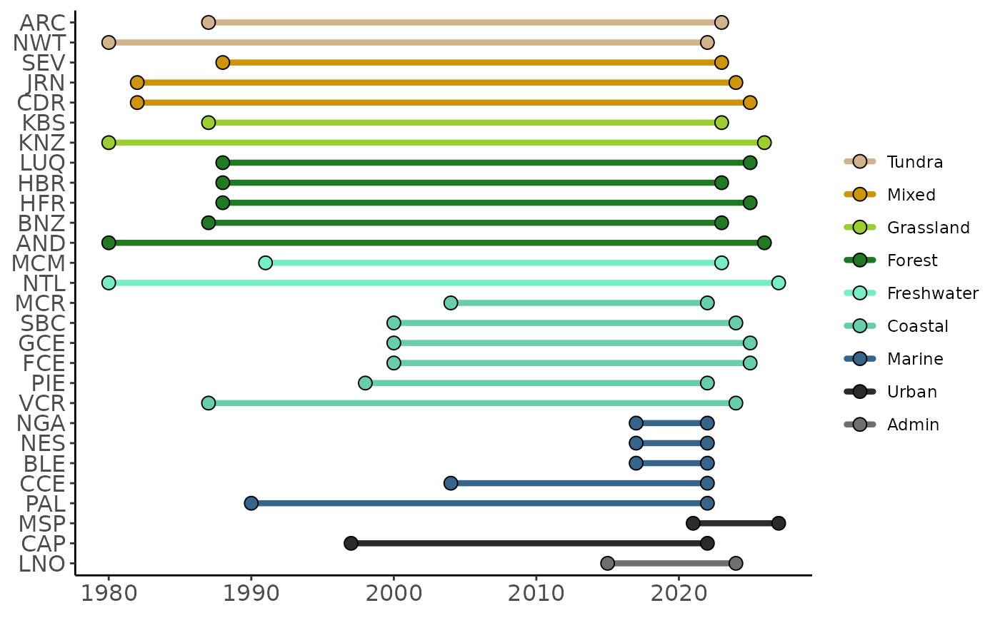
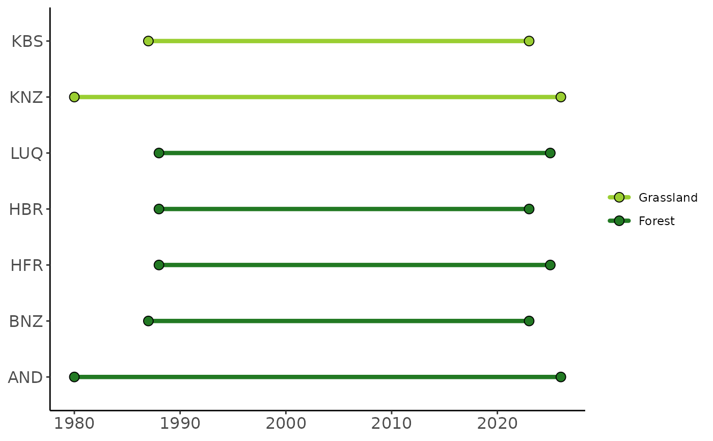

Creates a ggplot2 plot of all sites that meet the user-specified site code (i.e., three letter abbreviation) and/or habitat criteria. See lter_sites for the full set of site information including accepted site codes and habitat designations (unrecognized entries will trigger a warning and be ignored). Lines are grouped and colored by habitat to better emphasize possible similarities among sites
Arguments
- sites
(character) three letter site code(s) identifying site(s) of interest
- habitats
(character) habitat(s) of interest. See
unique(lter_sites$habitat)- colors
(character) colors to assign to the timelines expressed as a hexadecimal (e.g, #00FF00). Note there must be as many colors as habitats included in the graph
Examples
# Make the full timeline of all sites with default colors by supplying no arguments
site_timeline()

# Or make a timeline of only sites that meet certain criteria
site_timeline(habitats = c("grassland", "forest"))
